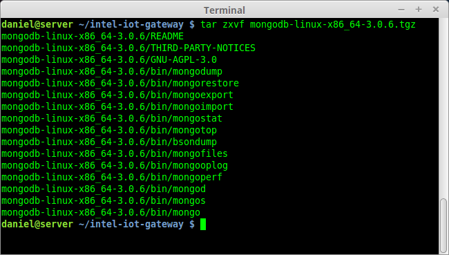

Edge Device Management
Part 1: Setup a MQTT and MongoDB Server
Setup the Mosquitto MQTT Broker
On the gateway type the following:
$ adduser mosquitto
$ mosquitto
This will create a user for your Mosquitto and launch the MQTT Broker named mosquitto.
Set up MongoDB on the Intel Iot Gateway
-
SSH into your Intel Iot Gateway and login.
If you need a reminder, look at Step 1: Login to your Intel Iot Gateway from the Intro Module.
-
Download the MongoDB software.
$ wget https://fastdl.mongodb.org/linux/mongodb-linux-x86_64-3.0.6.tgz
-
Once downloaded, unarchive the downloaded file.
$ tar zxvf mongodb-linux-x86_64-3.0.6.tgz
-
Add the mongodb binaries to the /usr/bin directory
$ mv ./bin/* /usr/bin/ -
The Intel Iot Gateway is enabled with grsecurity which by default prevents the execution of processes that are not added to a white list.
Add the MongoDM daemon (mongod) to the whitelist type:
$ paxctl -Cm /usr/bin/mongod -
The directory /data/db is the default directory that MongoDB stores its data. Let's make sure that it has plenty of space.
Type
df -hand notice the 28GB partition on/dev/sda3Create a directory named /data by typing
$ mkdir /dataThen create a link from /data/db to /mnt/space
$ ln -s /mnt/space /data/db -
Start the MongoDM daemon using the "mongod" command:
$ mongod